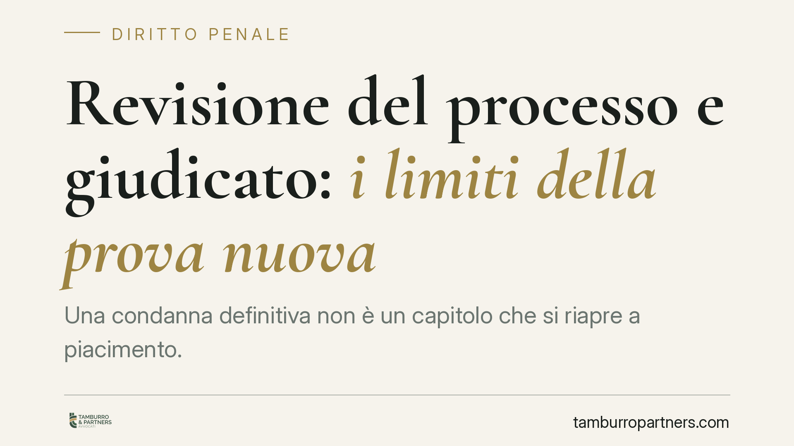

Revisione del processo e giudicato: i limiti della prova nuova
Una condanna definitiva non è un capitolo che si riapre a piacimento. La revisione del processo, disciplinata dagli articoli 629 e seguenti del codice di procedura penale, è un rimedio eccezionale: presuppone elementi capaci di dimostrare che il condannato deve essere prosciolto. La ritrattazione di una confessione, da sola, quasi mai integra questo requisito. Vediamo perché, distinguendo con precisione il piano del giudicato da quello della revisione.

Il caso e una necessaria premessa cronologica
Il dibattito su una vicenda di duplice omicidio in ambito familiare, con coniugi imputati e un sopravvissuto, offre lo spunto per chiarire un punto spesso confuso: il rapporto tra la sentenza che rende irrevocabile una condanna e l'eventuale, e successiva, richiesta di revisione del processo.
Sono due momenti distinti. La pronuncia della Corte di Cassazione che conferma la condanna e la rende definitiva chiude il grado di legittimità: da quel momento esiste un giudicato. La revisione, invece, è un mezzo di impugnazione straordinario che interviene dopo, quando la condanna è già definitiva, e segue un percorso autonomo davanti alla corte d'appello competente.
Attenzione, dunque, a non sovrapporre i due piani: la decisione che ha reso irrevocabile una condanna non coincide con quella che, anni più tardi, valuta l'ammissibilità di un'istanza di revisione. Sono provvedimenti diversi, con presupposti e conseguenze diverse.
Inquadramento normativo
La revisione è regolata dagli articoli 629 e seguenti c.p.p. e ha natura eccezionale: serve a rimuovere una condanna definitiva ingiusta, non a offrire un ulteriore grado di giudizio.
L'articolo 630 c.p.p. individua i casi tassativi in cui la revisione è ammessa. Il più discusso è quello delle prove nuove: elementi che, da soli o uniti a quelli già valutati, dimostrano che il condannato deve essere prosciolto. Il parametro è severo. L'articolo 631 c.p.p. precisa infatti che gli elementi posti a base della domanda devono essere tali da rendere evidente, se accertati, che il condannato deve essere prosciolto ai sensi degli articoli 529, 530 o 531 c.p.p.
Non basta, quindi, prospettare una lettura alternativa dei fatti già esaminati nel processo. La revisione non è la sede per rimettere in discussione il libero convincimento del giudice o per proporre una diversa valutazione delle stesse prove.
Prova nuova o diversa interpretazione dei fatti
Qui sta la distinzione decisiva.
È prova nuova l'elemento non conosciuto o non valutabile nel processo originario: un documento emerso in seguito, un accertamento tecnico prima impraticabile, un testimone mai sentito. Non è prova nuova, invece, la rilettura di materiale già acquisito e vagliato dai giudici di merito.
La ritrattazione di una confessione si colloca in una zona critica. Chi confessa e poi ritratta non introduce, di per sé, un fatto nuovo: offre una versione diversa. Perché quella ritrattazione possa incidere occorre che sia sorretta da elementi oggettivi, verificabili e capaci di dimostrare il proscioglimento nel senso richiesto dall'art. 631 c.p.p. In assenza, la dichiarazione contraria a quella resa in precedenza non supera il vaglio.
Il vaglio preventivo di ammissibilità
Prima di entrare nel merito, la corte d'appello compie un controllo di ammissibilità. L'articolo 634 c.p.p. consente di dichiarare inammissibile l'istanza proposta fuori dai casi previsti, senza osservanza delle forme di legge o manifestamente infondata.
È un filtro sostanziale: buona parte delle richieste di revisione si arresta qui. Comprendere questo passaggio è essenziale per impostare correttamente un'istanza, che non può ridursi alla riproposizione delle tesi difensive già disattese.
Implicazioni pratiche
Per il condannato definitivo e per chi lo assiste, il messaggio è netto: la revisione è uno strumento reale ma di applicazione ristretta. Non è una seconda occasione per il processo, ma un rimedio contro l'errore giudiziario documentabile.
Chi intende percorrere questa strada deve costruire un fascicolo solido, centrato su elementi effettivamente nuovi e su una prognosi di proscioglimento coerente con gli articoli 630 e 631 c.p.p. Impostazioni difensive fondate soltanto sulla ritrattazione, o su una diversa lettura delle stesse prove, hanno margini di successo minimi.
Cosa fare in concreto
- Verificate anzitutto se esiste un elemento davvero nuovo, non conosciuto o non valutabile nel processo definito.
- Distinguete con rigore tra prova nuova e semplice rilettura del materiale già acquisito: solo la prima apre la revisione.
- Ancorate ogni ritrattazione a riscontri oggettivi e verificabili, altrimenti resterà priva di efficacia.
- Impostate l'istanza sul requisito del proscioglimento richiesto dall'art. 631 c.p.p., non su una diversa valutazione dei fatti.
- Considerate in via preliminare il rischio di inammissibilità ex art. 634 c.p.p., calibrando forma e contenuto della domanda.
Il valore di garanzia del giudicato
La stabilità della cosa giudicata non è un ostacolo alla giustizia: ne è parte. Garantisce che le decisioni definitive non siano indefinitamente revocabili e tutela la certezza dei rapporti giuridici. La revisione bilancia questa esigenza con quella, altrettanto seria, di correggere le condanne ingiuste. Proprio per questo i suoi presupposti sono stringenti, e vanno affrontati con la massima serietà tecnica.
*Contributo informativo a cura di Tamburro & Partners - Avv. Giuseppe Tamburro. Non costituisce parere legale.*
Ogni condominio ha una storia a sé.
Se gestisci un'amministrazione e vuoi un confronto su una specifica questione condominiale, scrivi allo studio. Ti rispondiamo entro un giorno lavorativo.